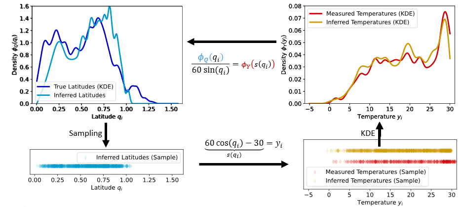

Tutorial
This tutorial provides a full walk-through on how to apply Eulerian Parameter Inference (EPI) to an example problem. We only assume that you already installed eulerpi.
The tutorial is divided into four sections:
Let’s start!
Introduction
Eulerian Parameter Inference is an algorithm to infer a parameter distribution \(Q\) satisfying \(Y = s(Q)\) given a (discrete) data probability distribution \(y_i \sim Y\) and a model implementing the mapping \(s: Q \to Y\). The (forward) model describes the mapping from the parameter points \(q_i\) to the data points \(y_i\).
In the following we will look at temperature data over the globe and a model for the dependence of the temperature \(y_i\) on the latitude \(q_i\).
{kind=link}
The goal is to derive the parameter distribution \(\Phi_Q\) from the data distribution \(\Phi_Y\). This is the inverse of what our (forward) model is providing. To solve the inverse problem, EPI uses the multi-dimension transformation formula:
{kind=link}
In the real world, problems with a known continuous data distribution are very sparse. Instead, we often rely on discrete measurements. EPI starts with discrete data points as input and derives a continuous distribution using Kernel Density Estimation (KDE) techniques. From this data distribution, the EPI algorithm derives the parameter distribution. To close the cycle between the data and parameters, we can again sample from this distribution and use the forward model to get a discrete distribution of the parameters.
{kind=link}
With this picture in mind, we can start to implement the temperature problem in eulerpi.
Define your data
Your data needs to be stored in a .csv file in the following format:
datapoint_dim1, datapoint_dim2, datapoint_dim3, ..., datapoint_dimN
datapoint_dim1, datapoint_dim2, datapoint_dim3, ..., datapoint_dimN
datapoint_dim1, datapoint_dim2, datapoint_dim3, ..., datapoint_dimN
...
datapoint_dim1, datapoint_dim2, datapoint_dim3, ..., datapoint_dimN
Each of the lines defines an N-dimensional data point. The .csv file will be loaded into an \(\mathrm{R}^{M \times N}\) numpy matrix in EPI.
In the following, we will use the example data TemperatureData.csv. You can download it here: Download Temperature Data.
It has 455 data points with two dimensions each. Nonuniform data is not supported in EPI.
Define your model
Next, you need to define your model. The most basic way is to derive from the eulerpi.core.model.Model base class.
class Temperature(Model):
""" """
param_dim = 1
data_dim = 1
PARAM_LIMITS = np.array([[0, np.pi / 2]])
CENTRAL_PARAM = np.array([np.pi / 4.0])
def __init__(
self,
central_param: np.ndarray = CENTRAL_PARAM,
param_limits: np.ndarray = PARAM_LIMITS,
name: Optional[str] = None,
**kwargs,
) -> None:
super().__init__(central_param, param_limits, name=name, **kwargs)
def forward(self, param):
low_T = -30.0
high_T = 30.0
res = jnp.array(
[low_T + (high_T - low_T) * jnp.cos(jnp.abs(param[0]))]
)
return res
def jacobian(self, param):
return jnp.array([60.0 * jnp.sin(jnp.abs(param[0]))])
Of course, you also need the imports:
import importlib
import jax.numpy as jnp
import numpy as np
from eulerpi.core.model import Model
A model inheriting from Model must implement the methods forward() and jacobian().
In addition, it must provide the methods getcentral_param() and getParamSamplingLimits() to provide the sampling algorithm with sensible starting values and boundary values.
The jacobian is derived analytically here and implemented explicitly.
Important
If you use jax to calculate the forward evaluation of your model, you can get the jacobian using jax.jacrev(self.forward).
In all other cases, you have to provide the jacobian using your own implementation.
Note
If you define your forward method using jax and as a class method, you can also inherit from JaxModel and the jacobian will be provided for you. Additionally, JaxModel will use the jit compiler to speed up the calculation of your jacobian but also of your forward call.
Warning
Using jit on functions with instance variables is dangerous. You can get false results if the variables change internally and jax does not see these changes.
Note
For more possibilities on how to define your model, e.g. using external c++ code, see the example section
Inference
Now we can now use EPI to infer the parameter distribution from the data.
from eulerpi.core.inference import inference
# This line is needed for multiprocessing in python
if __name__ == "__main__":
model = Temperature()
inference(model, data = "TemperatureData.csv")
Depending on the complexity of your model the sampling can take a long time.
Due to this reason, not only the final results but also intermediate sampling results are saved.
You can find them in the folder Applications/Temperature/. The final results are stored in the file Applications/Temperature/<run_nam>/<slice_name>/OverallSimResults.csv.
The slice_name results from the optional parameter slice of the inference() function.
Note
This tutorial is also available as a jupyter notebook: Download Temperature Tutorial.